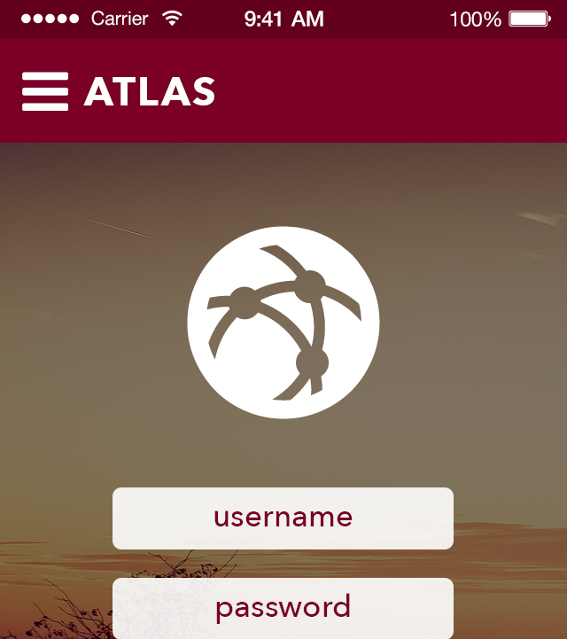
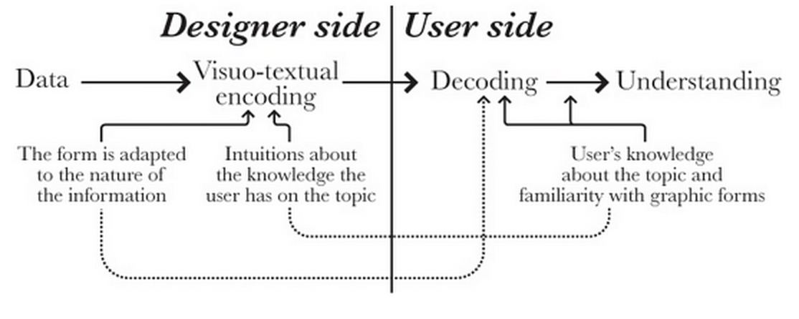
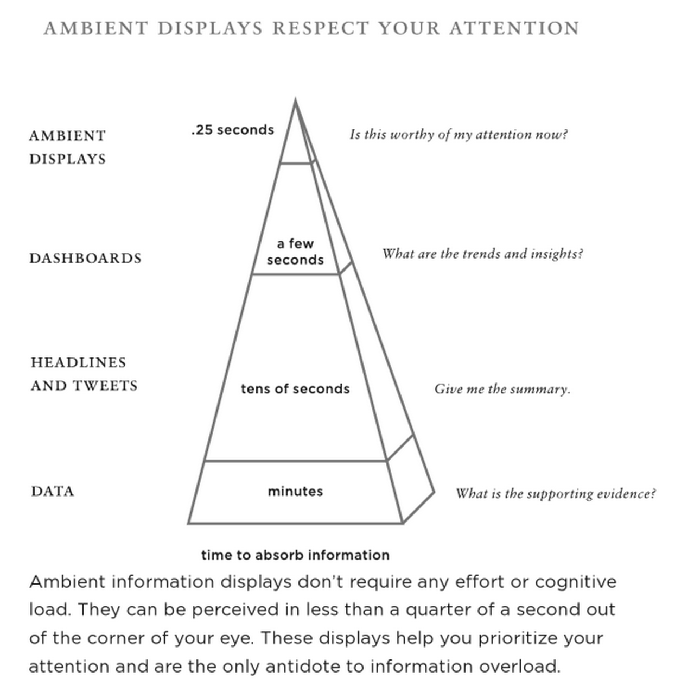
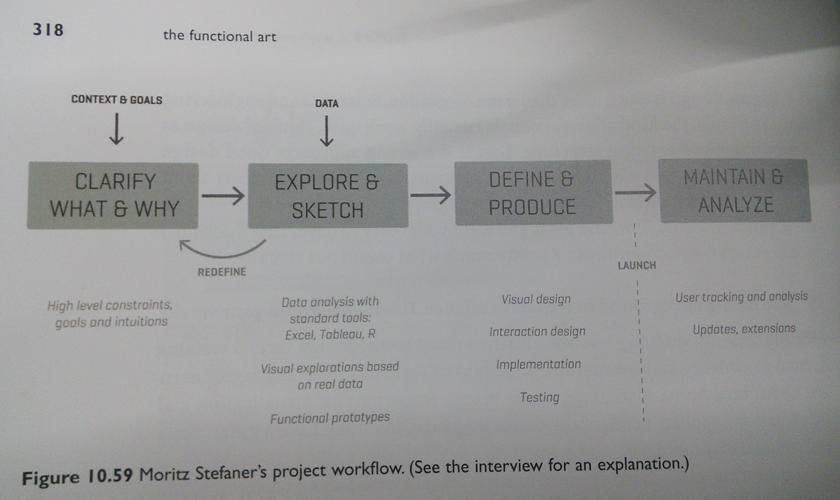

Semester Highlights
Thesis Committee Meeting #01
Christina Lidwin
December 11, 2014
Summer in Seattle
- Internship in Kirkland with Google Hangouts
- Applications for two full-time positions
- Exploring the Northwest
Internship Experience
Third team, product area, home office
- User Privacy (Back-end)
- Hangouts video calls (Front-end)
- Girls Who Code Mentor
Conversion Process
Five Technical Interviews in Two Offices
- Software Engineering
- User Experience
Advice and Mentorship
Anton (fireupman), Hangouts Designer
- Learn Sketch for prototyping
- Focus on micro-animations
- Process-based portfolio
Fall 2014 Courses
- Functional Animations (Independent Study)
- Human-Centered Methods
- Human-Centered Design
- Web Tutorials (Independent Study)
- Processing
Functional Animations
How can two elements relate to each other?
Human-Centered Methods
User Interfaces + Motion Graphics = Highly Interactive Graphics
- What does design mean (to me)?
- What sorts of interfaces most capture my attention?
- Where do motion graphics get applied in this area?
Human-Centered Design
Designing user interfaces (using web technologies)

Web Tutorials
Interactive modules on web technologies.

Processing
Representing everyday information in different ways.
Outside the Classroom
Conferences, Books, and Articles
Conferences
- How Interactive Design Conference (DC)
- "Technology is a science, but getting people to use it is an art" - Mike Arauz
- "Every habit is an entry point into another habit" - David Sherwin
- "Information architecture is about having a vision and creating a taxonomy for it" - Andy Fitzgerald
- Grace Hopper Women in Computing Conference (Phoenix)
Books
- Enchanted Objects
- Seven Abilities of Enchanted Objects are glanceability, gestureability, affordability, wearability, indestructability, usability, loveability
- "Always design a thing by considering its next-larger context" - Eliel Saarinen
- the functional art
- "Visualization should be seen as a technology" (19)
- "Technologies are extensions of ourselves and means to reach a goal" (19,22)
- "Think of an interface as a mediator between users and a goal" (192)
- Intertwingled
- "Information architecture becomes ecosystems." (32)
Articles
- Rise of Data Artists
- "consider the Data Designer a hybrid of two existing disciplines:" data analytics and interaction design
- The Interface Layer: Where Design Commoditizes Tech
- "Companies that successfully aggregate multiple services in a single interface have a chance of really shaking up industries"
- Google’s New Smartwatch Faces Look Beyond Time-Telling
- "The interesting thing about time is that everyone experiences it differently."
Thesis Direction
(de)coding and "living in an environment"
Designers Encode, Users Decode
Quality of Experience
- Understanding of Users
- Effective Design Process
- Needed
- Learnable and Usable
- Appropriate
- Aesthetic Experience
- Mutable
- Manageable
Seven Abilities of Enchanted Objects
- Glanceability
- Gesturability
- Affordability
- Wearability
- Indestructability
- Usability
- Loveability
Ambient Displays & Attention
Living in an Environment
Information Design Project Workflow
Context, Goals, and Data
- Mobile app leveraging APIs to gather data
- Android & Google APIs
- Ambient display affected by the imported data
- Visualizing time
- Einstein's Dreams
- History of Time
- Time Psychology
- Spring 2015 Coursework
- History of Collecting
- Rhetoric in Digital Environments
- Typography I